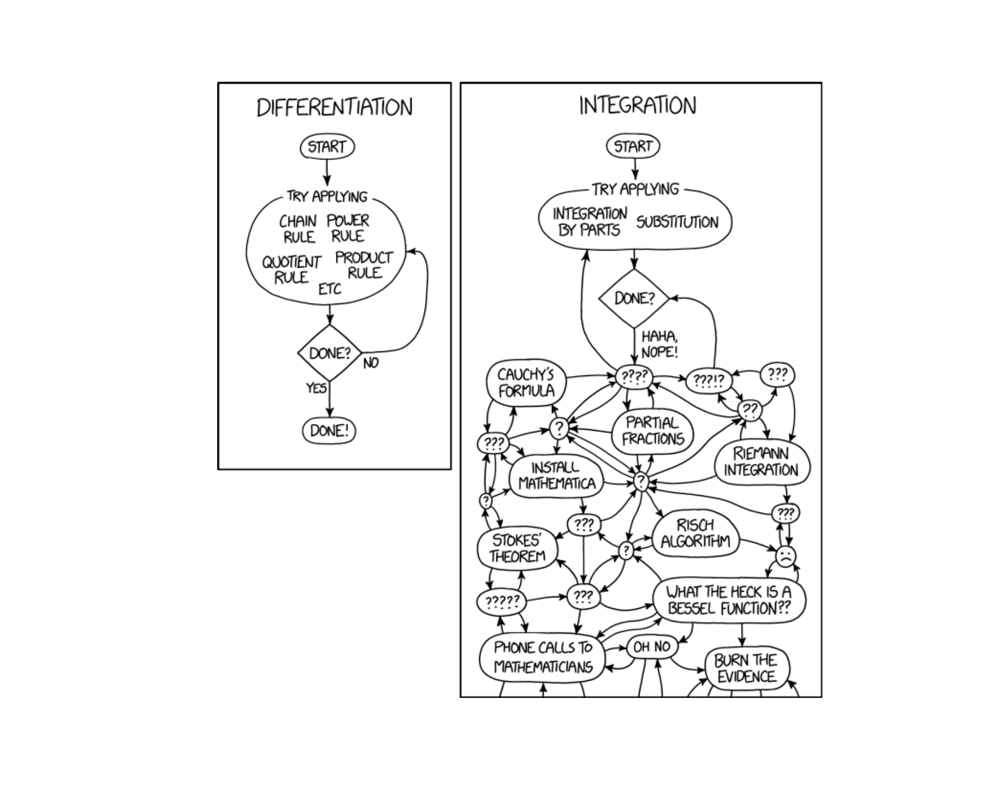
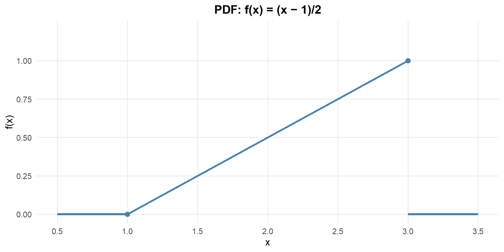
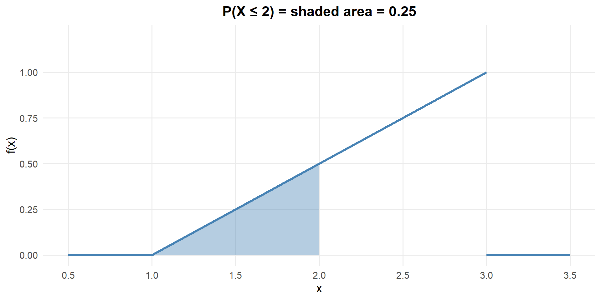
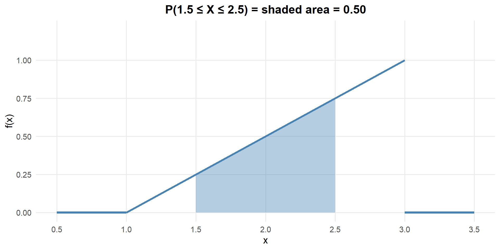
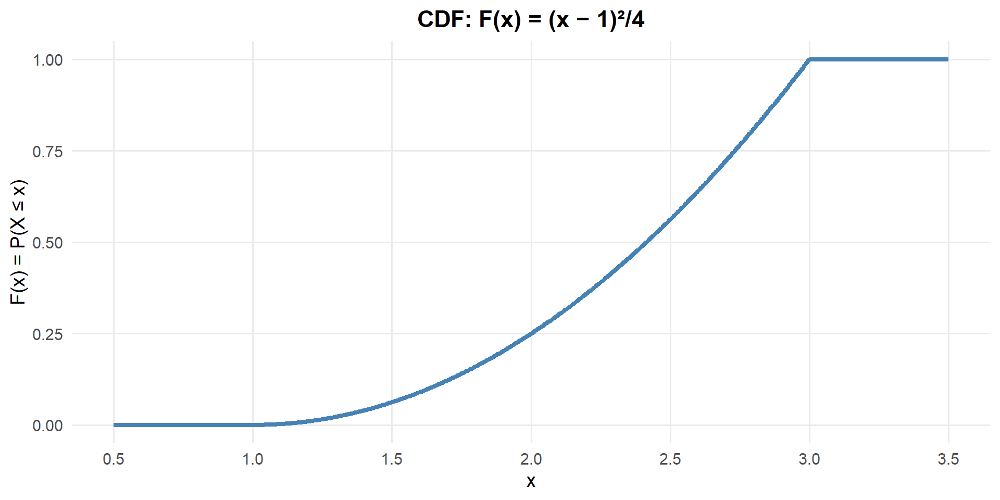

Lesson 12: Continuous Random Variables
Normal distribution — when you go from discrete to continuous, suddenly everything is about areas under curves.

What We Did: Lessons 6–11
Quick Review: Probability Basics (Lesson 6)
NoteKey Concepts from Lesson 6
Sample Spaces and Events:
- Sample space \(S\) = set of all possible outcomes
- Event = subset of the sample space
- Operations: Union (\(A \cup B\)), Intersection (\(A \cap B\)), Complement (\(A^c\))
Kolmogorov Axioms:
- \(P(A) \geq 0\)
- \(P(S) = 1\)
- For mutually exclusive events: \(P(A \cup B) = P(A) + P(B)\)
Key Rules:
- Complement Rule: \(P(A^c) = 1 - P(A)\)
- Addition Rule: \(P(A \cup B) = P(A) + P(B) - P(A \cap B)\)
Quick Review: Conditional Probability (Lesson 7)
NoteKey Concepts from Lesson 7
Conditional Probability: \[P(A \mid B) = \frac{P(A \cap B)}{P(B)}\]
Multiplication Rule: \[P(A \cap B) = P(A) \cdot P(B \mid A) = P(B) \cdot P(A \mid B)\]
Law of Total Probability: \[P(A) = P(B) \cdot P(A \mid B) + P(B^c) \cdot P(A \mid B^c)\]
Bayes’ Theorem: \[P(B \mid A) = \frac{P(B) \cdot P(A \mid B)}{P(B) \cdot P(A \mid B) + P(B^c) \cdot P(A \mid B^c)}\]
Quick Review: Counting & Independence (Lesson 8)
NoteKey Concepts from Lesson 8
Counting Formulas:
| With Replacement | Without Replacement | |
|---|---|---|
| Ordered | \(n^k\) | \(P(n,k) = \frac{n!}{(n-k)!}\) |
| Unordered | \(\binom{n+k-1}{k}\) | \(\binom{n}{k} = \frac{n!}{k!(n-k)!}\) |
Independence:
- \(A\) and \(B\) are independent if \(P(A \cap B) = P(A) \cdot P(B)\)
- Equivalently: \(P(A \mid B) = P(A)\)
- Independent \(\neq\) Mutually Exclusive!
Quick Review: Discrete Random Variables (Lesson 9)
NoteKey Concepts from Lesson 9
Random Variables:
- A random variable \(X\) assigns a numerical value to each outcome in a sample space
- Discrete RVs take finite or countably infinite values
PMF: \(p(x) = P(X = x)\) with \(p(x) \geq 0\) and \(\sum p(x) = 1\)
CDF: \(F(x) = P(X \leq x) = \sum_{y \leq x} p(y)\)
Expected Value: \(E(X) = \sum x \cdot p(x)\)
Variance: \(Var(X) = \sum (x - \mu)^2 \cdot p(x) = E(X^2) - [E(X)]^2\)
Quick Review: Binomial Distribution (Lesson 10)
NoteKey Concepts from Lesson 10
BINS Conditions:
- Binary outcomes (success/failure)
- Independent trials
- Number of trials is fixed (\(n\))
- Same probability (\(p\)) each trial
Key Formulas: If \(X \sim \text{Binomial}(n, p)\):
- PMF: \(P(X = x) = \binom{n}{x} p^x (1-p)^{n-x}\)
- Mean: \(E(X) = np\)
- Variance: \(Var(X) = np(1-p)\)
R Functions: dbinom(x, size, prob) for PMF, pbinom(x, size, prob) for CDF
Quick Review: Poisson Distribution (Lesson 11)
NoteKey Concepts from Lesson 11
When to Use Poisson:
- Counting events in a fixed interval (time, area, volume)
- Events occur independently at a constant average rate \(\lambda\)
Key Formulas: If \(X \sim \text{Poisson}(\lambda)\):
- PMF: \(P(X = x) = \frac{e^{-\lambda} \lambda^x}{x!}, \quad x = 0, 1, 2, \ldots\)
- Mean: \(E(X) = \lambda\)
- Variance: \(Var(X) = \lambda\)
R Functions: dpois(x, lambda) for PMF, ppois(x, lambda) for CDF
What We’re Doing: Lesson 12
Objectives
- Interpret PDFs and areas as probabilities
- Compute probabilities from PDFs and CDFs
- Find \(E(X)\) and \(Var(X)\) for continuous random variables
Required Reading
Devore, Sections 4.1, 4.2
Break!
Reese
Cal
The Takeaway for Today
NoteKey Concepts: Continuous Random Variables
Continuous vs. Discrete:
- Discrete RVs: probabilities come from a PMF — \(P(X = x)\)
- Continuous RVs: probabilities come from areas under a PDF — \(P(a \leq X \leq b) = \int_a^b f(x)\,dx\)
Probability Density Function (PDF): \(f(x)\) where:
- \(f(x) \geq 0\) for all \(x\)
- \(\int_{-\infty}^{\infty} f(x)\,dx = 1\)
- \(P(a \leq X \leq b) = \int_a^b f(x)\,dx\)
Cumulative Distribution Function (CDF): \[F(x) = P(X \leq x) = \int_{-\infty}^{x} f(t)\,dt\]
Expected Value and Variance:
- \(E(X) = \int_{-\infty}^{\infty} x \cdot f(x)\,dx\)
- \(Var(X) = \int_{-\infty}^{\infty} (x - \mu)^2 \cdot f(x)\,dx = E(X^2) - [E(X)]^2\)
Critical Difference: For continuous RVs, \(P(X = c) = 0\) for any single value \(c\).
From Discrete to Continuous
The Big Shift
In Lessons 9–11, we worked with discrete random variables — they take on countable values (0, 1, 2, …), and we assign probability to each value using a PMF.
But many quantities in the real world are continuous:
- Time until a piece of equipment fails
- Weight of ammunition in a crate
- Distance a mortar round travels
- Body temperature of a soldier
For these, \(X\) can take any value in an interval. There are infinitely (uncountably!) many possible values, so we can’t assign probability to each one individually.
ImportantThe Key Idea
For continuous random variables, we don’t ask “What is \(P(X = x)\)?” — that probability is always zero.
Instead, we ask “What is \(P(a \leq X \leq b)\)?” — the probability that \(X\) falls in an interval.
Discrete vs. Continuous: A Comparison
| Feature | Discrete | Continuous |
|---|---|---|
| Values | Countable (0, 1, 2, …) | Any value in an interval |
| Probability of one value | \(P(X = x) = p(x) > 0\) | \(P(X = x) = 0\) |
| Probability of interval | Sum the PMF: \(\sum p(x)\) | Area under PDF: \(\int f(x)\,dx\) |
| Distribution function | PMF: \(p(x)\) | PDF: \(f(x)\) |
| CDF | Step function | Smooth curve |
Probability Density Functions (PDFs)
What is a PDF?
ImportantProbability Density Function (PDF)
A probability density function \(f(x)\) for a continuous random variable \(X\) satisfies:
- \(f(x) \geq 0\) for all \(x\)
- \(\int_{-\infty}^{\infty} f(x)\,dx = 1\) (total area under the curve equals 1)
Probabilities are computed as areas under the curve:
\[P(a \leq X \leq b) = \int_a^b f(x)\,dx\]
WarningPDF Values Are NOT Probabilities!
Unlike the PMF, the value \(f(x)\) is not \(P(X = x)\). The PDF gives density, not probability. In fact, \(f(x)\) can be greater than 1!
Probability only comes from areas — integrating the PDF over an interval.
Example: Uniform Distribution
A supply convoy is scheduled to arrive between 0800 and 1000 (a 2-hour window). The actual arrival time is equally likely to be any time in that window.
Let \(X\) = arrival time (in hours after 0800), so \(X\) ranges from 0 to 2.
The PDF is:
\[f(x) = \begin{cases} \frac{1}{2} & 0 \leq x \leq 2 \\ 0 & \text{otherwise} \end{cases}\]

Verify: The total area is \(\frac{1}{2} \times 2 = 1\). ✓
Computing Probabilities from the PDF
What is the probability the convoy arrives in the first hour (before 0900)?
\[P(0 \leq X \leq 1) = \int_0^1 \frac{1}{2}\,dx = \frac{1}{2} \times 1 = 0.5\]

What about \(P(0.5 \leq X \leq 1.5)\) — arrives between 0830 and 0930?
\[P(0.5 \leq X \leq 1.5) = \int_{0.5}^{1.5} \frac{1}{2}\,dx = \frac{1}{2} \times 1 = 0.5\]
For a uniform distribution on \([a,b]\): any interval of the same length has the same probability.
\(P(X = c) = 0\) for Continuous RVs
ImportantA Critical Fact
For any continuous random variable:
\[P(X = c) = \int_c^c f(x)\,dx = 0\]
The “area” under a curve at a single point is zero.
Practical consequence:
\[P(a \leq X \leq b) = P(a < X < b) = P(a \leq X < b) = P(a < X \leq b)\]
It doesn’t matter whether we include the endpoints — the probability is the same!
This is very different from discrete RVs, where \(P(X = x)\) can be large. For continuous RVs, probability only accumulates over intervals.
The Cumulative Distribution Function (CDF)
CDF for Continuous RVs
ImportantCumulative Distribution Function
The CDF of a continuous random variable \(X\) with PDF \(f(x)\) is:
\[F(x) = P(X \leq x) = \int_{-\infty}^{x} f(t)\,dt\]
Properties:
- \(F(x)\) is non-decreasing
- \(\lim_{x \to -\infty} F(x) = 0\) and \(\lim_{x \to \infty} F(x) = 1\)
- \(P(a \leq X \leq b) = F(b) - F(a)\)
- \(f(x) = F'(x)\) — the PDF is the derivative of the CDF
Example: CDF of the Uniform Distribution
For our convoy arrival time \(X \sim \text{Uniform}(0, 2)\):
\[F(x) = \begin{cases} 0 & x < 0 \\ \frac{x}{2} & 0 \leq x \leq 2 \\ 1 & x > 2 \end{cases}\]

Using the CDF: \(P(0.5 \leq X \leq 1.5) = F(1.5) - F(0.5) = \frac{1.5}{2} - \frac{0.5}{2} = 0.75 - 0.25 = 0.50\)
A Non-Uniform Example
Triangular PDF
Suppose a platoon’s patrol completion time (in hours) follows a triangular distribution:
\[f(x) = \begin{cases} x & 0 \leq x \leq 1 \\ 2 - x & 1 < x \leq 2 \\ 0 & \text{otherwise} \end{cases}\]

Verify it’s a valid PDF:
\[\int_0^1 x\,dx + \int_1^2 (2-x)\,dx = \frac{1}{2} + \frac{1}{2} = 1 \quad \checkmark\]
What is \(P(X \leq 0.5)\)?
\[P(X \leq 0.5) = \int_0^{0.5} x\,dx = \frac{x^2}{2}\Bigg|_0^{0.5} = \frac{0.25}{2} = 0.125\]
Only a 12.5% chance the patrol finishes in under 30 minutes — most of the probability mass is near \(x = 1\).
What is \(P(0.5 \leq X \leq 1.5)\)?
\[P(0.5 \leq X \leq 1.5) = \int_{0.5}^{1} x\,dx + \int_1^{1.5} (2-x)\,dx\]
\[= \left[\frac{x^2}{2}\right]_{0.5}^{1} + \left[2x - \frac{x^2}{2}\right]_1^{1.5}\]
\[= \left(\frac{1}{2} - \frac{0.25}{2}\right) + \left(\left(3 - \frac{2.25}{2}\right) - \left(2 - \frac{1}{2}\right)\right)\]
\[= 0.375 + 0.375 = 0.75\]
Expected Value and Variance
Continuous Versions
ImportantExpected Value and Variance for Continuous RVs
If \(X\) is a continuous random variable with PDF \(f(x)\):
Expected Value (Mean): \[E(X) = \mu = \int_{-\infty}^{\infty} x \cdot f(x)\,dx\]
Expected Value of \(g(X)\): \[E[g(X)] = \int_{-\infty}^{\infty} g(x) \cdot f(x)\,dx\]
Variance: \[Var(X) = \int_{-\infty}^{\infty} (x - \mu)^2 \cdot f(x)\,dx = E(X^2) - [E(X)]^2\]
Standard Deviation: \[SD(X) = \sigma = \sqrt{Var(X)}\]
These are the exact same concepts as in the discrete case — just replace sums (\(\sum\)) with integrals (\(\int\)).
Example: Uniform Distribution Parameters
For \(X \sim \text{Uniform}(a, b)\) with \(f(x) = \frac{1}{b-a}\) on \([a, b]\):
\[E(X) = \int_a^b x \cdot \frac{1}{b-a}\,dx = \frac{a+b}{2}\]
\[Var(X) = \frac{(b-a)^2}{12}\]
For our convoy arrival time with \(a = 0\), \(b = 2\):
\[E(X) = \frac{0 + 2}{2} = 1 \text{ hour (expected arrival: 0900)}\]
\[Var(X) = \frac{(2-0)^2}{12} = \frac{1}{3} \approx 0.333 \text{ hours}^2\]
\[SD(X) = \sqrt{\frac{1}{3}} \approx 0.577 \text{ hours} \approx 35 \text{ minutes}\]
NoteUniform Distribution Summary
If \(X \sim \text{Uniform}(a, b)\):
- PDF: \(f(x) = \frac{1}{b-a}\) for \(a \leq x \leq b\)
- CDF: \(F(x) = \frac{x - a}{b - a}\) for \(a \leq x \leq b\)
- Mean: \(E(X) = \frac{a+b}{2}\)
- Variance: \(Var(X) = \frac{(b-a)^2}{12}\)
R Functions: dunif(x, min, max) for PDF, punif(x, min, max) for CDF
Example: Triangular Distribution Parameters
For our triangular PDF with patrol completion time:
\[E(X) = \int_0^1 x \cdot x\,dx + \int_1^2 x(2-x)\,dx\]
\[= \int_0^1 x^2\,dx + \int_1^2 (2x - x^2)\,dx\]
\[= \frac{1}{3} + \left[x^2 - \frac{x^3}{3}\right]_1^2\]
\[= \frac{1}{3} + \left(4 - \frac{8}{3}\right) - \left(1 - \frac{1}{3}\right) = \frac{1}{3} + \frac{4}{3} - \frac{2}{3} = 1\]
The expected patrol time is 1 hour — right at the peak of the triangle. Makes sense!
R for Continuous Distributions
For the uniform distribution, R provides built-in functions:
# PDF at x = 0.5 for Uniform(0, 2)
dunif(0.5, min = 0, max = 2)[1] 0.5# CDF at x = 1.5: P(X <= 1.5)
punif(1.5, min = 0, max = 2)[1] 0.75# P(0.5 <= X <= 1.5)
punif(1.5, min = 0, max = 2) - punif(0.5, min = 0, max = 2)[1] 0.5For custom PDFs, we can use integrate():
# Define the triangular PDF
tri_pdf <- function(x) {
ifelse(x >= 0 & x <= 1, x,
ifelse(x > 1 & x <= 2, 2 - x, 0))
}
# Verify total area = 1
integrate(tri_pdf, lower = -Inf, upper = Inf)1 with absolute error < 9.2e-05# P(X <= 0.5)
integrate(tri_pdf, lower = 0, upper = 0.5)0.125 with absolute error < 1.4e-15# E(X)
integrate(function(x) x * tri_pdf(x), lower = 0, upper = 2)1 with absolute error < 1.1e-14Board Problems
Problem 1: Equipment Inspection Time
At an arms room, the time (in minutes) for a weapon inspection follows a continuous distribution with PDF:
\[f(x) = \begin{cases} \frac{x}{18} & 0 \leq x \leq 6 \\ 0 & \text{otherwise} \end{cases}\]
NoteQuestions
Verify that \(f(x)\) is a valid PDF (show the total area equals 1).
What is the probability an inspection takes less than 3 minutes?
What is \(P(2 \leq X \leq 5)\)?
Find the CDF \(F(x)\).
Find \(E(X)\) — the expected inspection time.
Find \(Var(X)\) and \(SD(X)\).
TipAnswers
\(\int_0^6 \frac{x}{18}\,dx = \frac{x^2}{36}\Big|_0^6 = \frac{36}{36} = 1\) ✓
\(P(X < 3) = \int_0^3 \frac{x}{18}\,dx = \frac{x^2}{36}\Big|_0^3 = \frac{9}{36} = 0.25\)
integrate(function(x) x / 18, lower = 0, upper = 3)0.25 with absolute error < 2.8e-15- \(P(2 \leq X \leq 5) = \int_2^5 \frac{x}{18}\,dx = \frac{x^2}{36}\Big|_2^5 = \frac{25}{36} - \frac{4}{36} = \frac{21}{36} \approx 0.583\)
integrate(function(x) x / 18, lower = 2, upper = 5)0.5833333 with absolute error < 6.5e-15- For \(0 \leq x \leq 6\): \[F(x) = \int_0^x \frac{t}{18}\,dt = \frac{x^2}{36}\]
So: \(F(x) = \begin{cases} 0 & x < 0 \\ x^2/36 & 0 \leq x \leq 6 \\ 1 & x > 6 \end{cases}\)
- \(E(X) = \int_0^6 x \cdot \frac{x}{18}\,dx = \int_0^6 \frac{x^2}{18}\,dx = \frac{x^3}{54}\Big|_0^6 = \frac{216}{54} = 4\) minutes
integrate(function(x) x * (x / 18), lower = 0, upper = 6)4 with absolute error < 4.4e-14- \(E(X^2) = \int_0^6 x^2 \cdot \frac{x}{18}\,dx = \int_0^6 \frac{x^3}{18}\,dx = \frac{x^4}{72}\Big|_0^6 = \frac{1296}{72} = 18\)
\(Var(X) = E(X^2) - [E(X)]^2 = 18 - 16 = 2\) min\(^2\)
\(SD(X) = \sqrt{2} \approx 1.414\) minutes
EX2 <- integrate(function(x) x^2 * (x / 18), lower = 0, upper = 6)$value
EX2 - 4^2 # Var(X)[1] 2sqrt(EX2 - 4^2) # SD(X)[1] 1.414214Problem 2: Sentry Duty Wait Time
A sentry expects a supply truck sometime during their 4-hour shift. The arrival time is uniformly distributed over the 4-hour window. Let \(X\) = time (in hours) until the truck arrives.
NoteQuestions
Write down the PDF and identify the distribution of \(X\).
What is \(P(X \leq 1)\) — the truck arrives in the first hour?
What is \(P(1 \leq X \leq 3)\)?
What are \(E(X)\) and \(SD(X)\)?
The sentry’s shift ends at hour 4. They get relieved early at hour 3. What is the probability the truck has already arrived?
What is the probability the truck arrives in the last 30 minutes of the shift?
TipAnswers
\(X \sim \text{Uniform}(0, 4)\), so \(f(x) = \frac{1}{4}\) for \(0 \leq x \leq 4\)
\(P(X \leq 1) = \frac{1}{4} \times 1 = 0.25\)
punif(1, min = 0, max = 4)[1] 0.25- \(P(1 \leq X \leq 3) = \frac{1}{4} \times 2 = 0.50\)
punif(3, min = 0, max = 4) - punif(1, min = 0, max = 4)[1] 0.5- \(E(X) = \frac{0 + 4}{2} = 2\) hours
\(Var(X) = \frac{(4-0)^2}{12} = \frac{16}{12} = \frac{4}{3}\)
\(SD(X) = \sqrt{4/3} \approx 1.155\) hours
- \(P(X \leq 3) = F(3) = \frac{3}{4} = 0.75\)
punif(3, min = 0, max = 4)[1] 0.75- \(P(3.5 \leq X \leq 4) = \frac{1}{4} \times 0.5 = 0.125\)
punif(4, min = 0, max = 4) - punif(3.5, min = 0, max = 4)[1] 0.125Problem 3: Fuel Consumption
A tactical vehicle’s fuel consumption rate (gallons per mile) on a certain terrain follows the PDF:
\[f(x) = \begin{cases} 6x(1-x) & 0 \leq x \leq 1 \\ 0 & \text{otherwise} \end{cases}\]
NoteQuestions
Verify this is a valid PDF.
What is the probability the fuel consumption rate is less than 0.5 gallons per mile?
What is the probability the rate is between 0.25 and 0.75?
Find \(E(X)\) — the expected fuel consumption rate.
Find \(Var(X)\) and \(SD(X)\).
Is it more likely that the rate is above or below 0.5? Explain.
TipAnswers
- \(\int_0^1 6x(1-x)\,dx = \int_0^1 (6x - 6x^2)\,dx = \left[3x^2 - 2x^3\right]_0^1 = 3 - 2 = 1\) ✓
integrate(function(x) 6 * x * (1 - x), lower = 0, upper = 1)1 with absolute error < 1.1e-14- \(P(X < 0.5) = \int_0^{0.5} 6x(1-x)\,dx = \left[3x^2 - 2x^3\right]_0^{0.5} = 0.75 - 0.25 = 0.50\)
integrate(function(x) 6 * x * (1 - x), lower = 0, upper = 0.5)0.5 with absolute error < 5.6e-15- \(P(0.25 \leq X \leq 0.75) = \int_{0.25}^{0.75} 6x(1-x)\,dx\)
integrate(function(x) 6 * x * (1 - x), lower = 0.25, upper = 0.75)0.6875 with absolute error < 7.6e-15- \(E(X) = \int_0^1 x \cdot 6x(1-x)\,dx = \int_0^1 (6x^2 - 6x^3)\,dx = \left[2x^3 - \frac{3x^4}{2}\right]_0^1 = 2 - 1.5 = 0.5\)
integrate(function(x) x * 6 * x * (1 - x), lower = 0, upper = 1)0.5 with absolute error < 5.6e-15- \(E(X^2) = \int_0^1 x^2 \cdot 6x(1-x)\,dx = \int_0^1 (6x^3 - 6x^4)\,dx = \left[\frac{3x^4}{2} - \frac{6x^5}{5}\right]_0^1 = 1.5 - 1.2 = 0.3\)
\(Var(X) = 0.3 - 0.25 = 0.05\)
\(SD(X) = \sqrt{0.05} \approx 0.224\)
EX2 <- integrate(function(x) x^2 * 6 * x * (1 - x), lower = 0, upper = 1)$value
EX2 - 0.5^2 # Var(X)[1] 0.05sqrt(EX2 - 0.5^2) # SD(X)[1] 0.2236068- Exactly equally likely! The PDF \(f(x) = 6x(1-x)\) is symmetric about \(x = 0.5\), and we showed \(P(X < 0.5) = 0.50\). So \(P(X > 0.5) = 0.50\) as well.
Problem 4: Marksmanship Score
A cadet’s marksmanship score on a standardized assessment is uniformly distributed between 60 and 100 points. Let \(X\) = the cadet’s score.
NoteQuestions
What is the PDF of \(X\)?
What is \(P(X \geq 90)\) — the probability of scoring 90 or above?
What is the probability the score is between 70 and 85?
What are \(E(X)\) and \(SD(X)\)?
A score of 80 or above is “Expert.” What percentage of cadets qualify as Expert?
Given that a cadet scored at least 75, what is the probability they scored at least 90? (Hint: use conditional probability with the CDF)
TipAnswers
\(X \sim \text{Uniform}(60, 100)\), so \(f(x) = \frac{1}{100-60} = \frac{1}{40}\) for \(60 \leq x \leq 100\)
\(P(X \geq 90) = \frac{100 - 90}{40} = \frac{10}{40} = 0.25\)
1 - punif(90, min = 60, max = 100)[1] 0.25- \(P(70 \leq X \leq 85) = \frac{85 - 70}{40} = \frac{15}{40} = 0.375\)
punif(85, min = 60, max = 100) - punif(70, min = 60, max = 100)[1] 0.375- \(E(X) = \frac{60 + 100}{2} = 80\)
\(Var(X) = \frac{(100 - 60)^2}{12} = \frac{1600}{12} \approx 133.33\)
\(SD(X) = \sqrt{133.33} \approx 11.55\)
- \(P(X \geq 80) = \frac{100 - 80}{40} = \frac{20}{40} = 0.50\) — 50% qualify as Expert.
1 - punif(80, min = 60, max = 100)[1] 0.5- \(P(X \geq 90 \mid X \geq 75) = \frac{P(X \geq 90)}{P(X \geq 75)} = \frac{10/40}{25/40} = \frac{10}{25} = 0.40\)
(1 - punif(90, min = 60, max = 100)) / (1 - punif(75, min = 60, max = 100))[1] 0.4Before You Leave
Today
- Continuous RVs have probabilities given by areas under the PDF, not by the PMF
- PDF: \(f(x) \geq 0\) and \(\int f(x)\,dx = 1\) — but \(f(x)\) is density, not probability
- CDF: \(F(x) = P(X \leq x)\) — use it to compute \(P(a \leq X \leq b) = F(b) - F(a)\)
- \(P(X = c) = 0\) for continuous RVs — endpoints don’t matter
- \(E(X)\) and \(Var(X)\) use integrals instead of sums, but the formulas are analogous
- R:
dunif(),punif()for uniform;integrate()for custom PDFs
Any questions?
Next Lesson
Lesson 13: Normal Distribution
- Standardize and use normal probabilities
- Find normal quantiles for given tail areas
- Assess plausibility using normal models
Upcoming Graded Events
- WebAssign 4.1–4.2 - Due before Lesson 13
- Lesson 15 - Review (Lessons 1–14)
- WPR I - Lesson 16